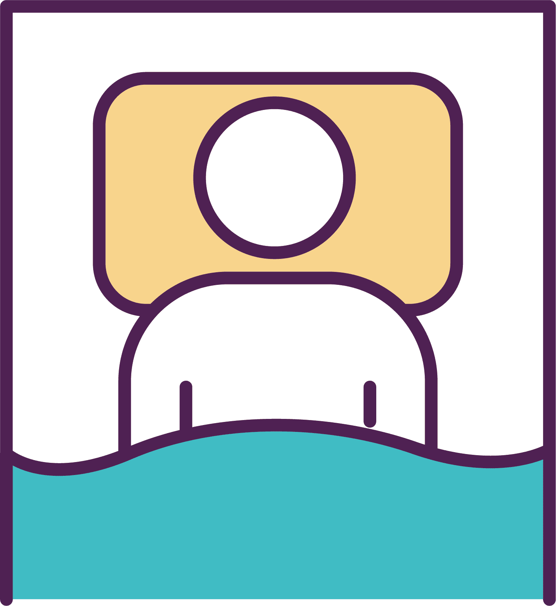
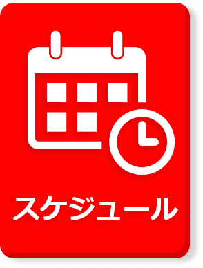
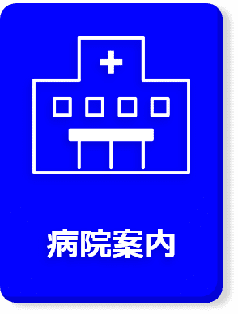
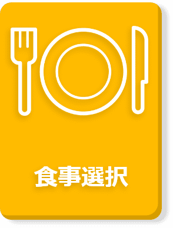
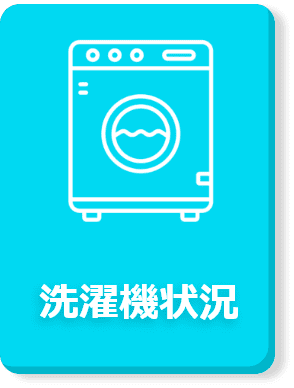
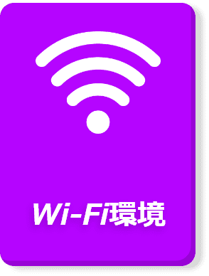
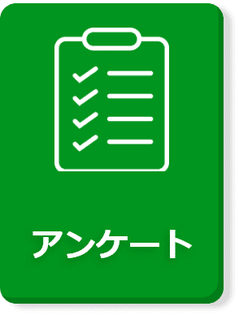

快適で安心できる入院生活へ
CareCompanionは、入院患者のために設計された革新的なサポートシステムです。このシステムは、患者がベッドサイドテレビを通じて利用できる、包括的なケアとコミュニケーションのプラットフォームです。医師や看護師からのアポイントメント、検査、薬の服用時間など、重要な医療情報を簡単に確認できます。更にオンデマンドにて映画やアニメも楽しむことができ、入院生活をより快適に過ごせるサービスを提供しております。
CareCompanionを導入する3つのメリット
健康状態の見える化
担当医と担当看護師の電子カルテとデータを共有することが可能なため、診察やリハビリでも双方の意思の疎通に困ることなくスムーズに健康管理を行えます。
予定の確認が容易に
常に担当医が日程の確認を行った上でシステム内でスケジュールを設定するため、医師と患者の予定の確認を正確に行えるようになります。

快適な入院生活を提供
病院内のお知らせやエンタメコンテンツといった機能も内蔵されているため、病院とのコミュニケーションツールとしてもご活用いただけるようになっております。
本システムの主要機能






エンタメコンテンツも充実♪
CareCompanionは、入院患者のために設計された革新的なサポートシステムです。このシステムは、患者がベッドサイドテレビを通じて利用できる、包括的なケアとコミュニケーションのプラットフォームです。医師や看護師からのアポイントメント、検査、薬の服用時間など、重要な医療情報を簡単に確認できます。更にオンデマンドにて映画やアニメも楽しむことができ、入院生活をより快適に過ごせるサービスを提供しております。